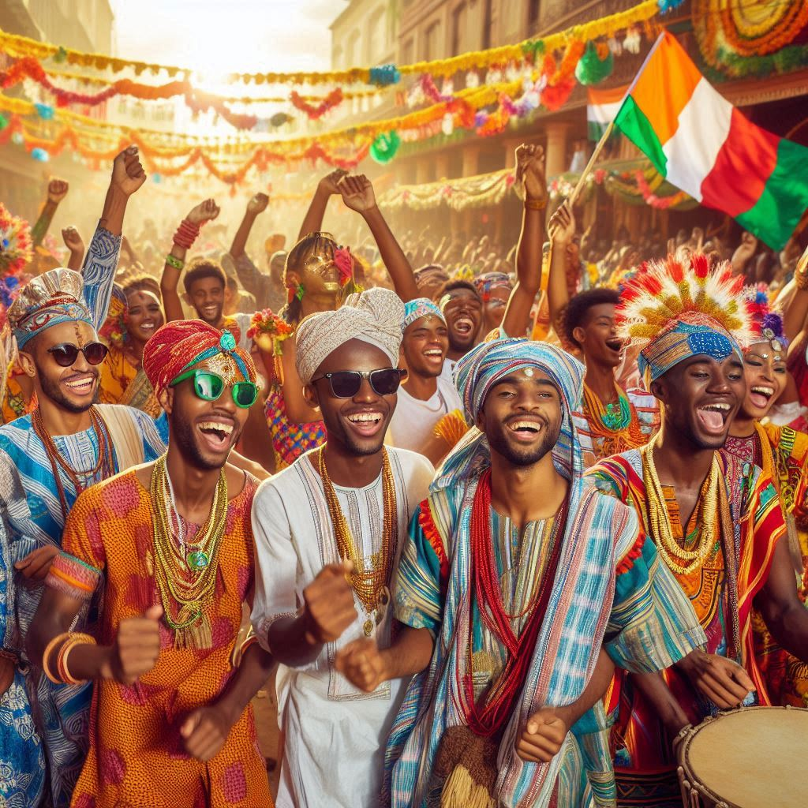
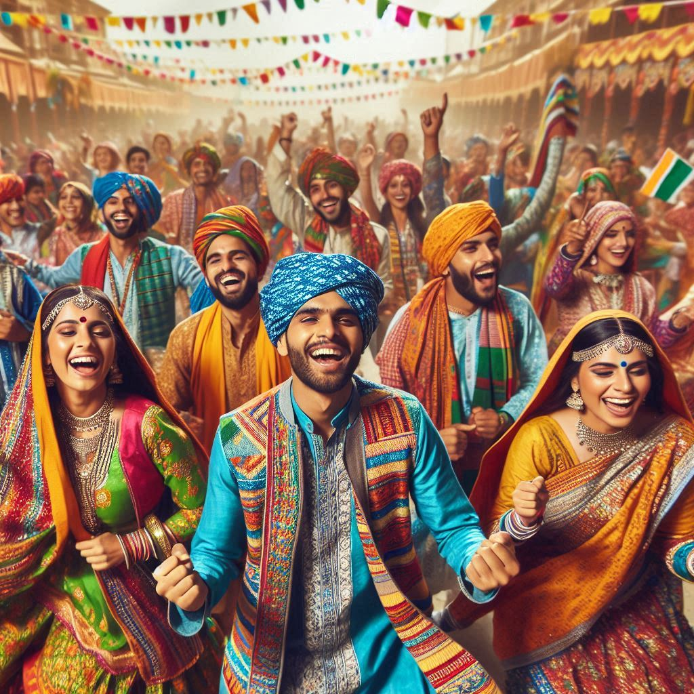

The traditional dress of Bihar reflects its rich cultural heritage and varies among different communities and
regions within the state. Both men and women have distinct attire that showcases the artistry, fabrics, and
craftsmanship prevalent in Bihar.
Traditional Dress for Women
Saree:
- The saree is the most common traditional attire for women in Bihar.
- Women often wear a Bihari saree, which is typically made of cotton or silk.
- The Madhubani saree, adorned with intricate Madhubani paintings, is particularly popular.
- Sarees are draped in various styles, with the most common being the Nauvari, where the
saree is wrapped in a way that resembles a dhoti.
Blouse:
- The saree is paired with a blouse (choli), which may be simple or elaborately designed,
depending on the occasion.
Churidar and Salwar Kameez:
- In addition to sarees, many women also wear salwar kameez or churidar, especially
in urban areas.
- These outfits are comfortable and practical for daily wear, often made from cotton or synthetic
fabrics.
Dupatta:
- Women often complement their outfits with dupattas, which are long, flowing scarves
that
add elegance and grace.
Jewelry:
- Traditional jewelry, such as bangles, earrings, necklaces, and nose
rings, plays an essential role in a Bihari woman's attire.
- Many women wear a "mangalsutra" (a sacred necklace) and other traditional ornaments that
hold cultural significance.


Traditional Dress for Men
Dhoti:
- The dhoti is the traditional attire for men in Bihar, commonly worn during festivals and formal
occasions.
- It is a piece of cloth wrapped around the waist and tied securely.
Kurta:
- Men often pair the dhoti with a kurta, which is a long tunic that can be made from
cotton, silk, or other fabrics.
- Kurtas may vary in design, from simple and plain to intricately embroidered, depending on the
occasion.
Sherwani:
- For special occasions like weddings and religious ceremonies, men may wear a sherwani,
which is a long coat-like garment, often paired with churidar pants.
- Sherwanis are usually made of rich fabrics like silk and adorned with intricate embroidery.
Lungi:
- In rural areas, men may wear a lungi, a traditional garment similar to a dhoti but
usually shorter.
- It is often worn in casual settings and during hot weather for comfort.
Topi:
- Some men also wear traditional headgear called topi, which can vary in style and is worn
during cultural and religious functions.
Regional Variations
- Bihari attire varies across different regions, with distinct styles and fabrics. For example, the
Mithila region is known for its colorful sarees and Madhubani paintings, while the Magadh
region often features simpler, more functional clothing.
Modern Influences
While traditional attire remains popular, modern fashion influences have also made their way into Bihari
clothing. Many women and men now wear contemporary outfits, especially in urban areas, while still
incorporating traditional elements during festivals and special occasions.
Conclusion
The traditional dress of Bihar is a vibrant reflection of its rich cultural tapestry, showcasing the
artistry and craftsmanship of the region. The saree and dhoti, along with their accompanying garments,
are
not just articles of clothing but also a testament to the state's heritage, identity, and the enduring
spirit of its people.